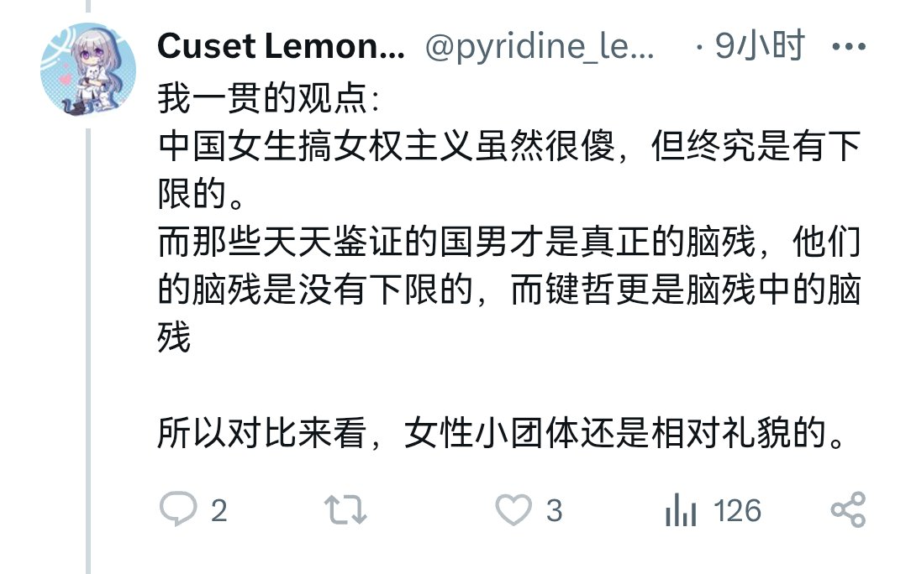

孤独症患者
@NMD_2012
@ETOH6O3 办事效率真这么高的吗

ETOH6O3
@ETOH6O3
@Na3PO2 @pyridine_lemon @NMD_2012 找我也帮不了忙，只能截图挂人，ta把我屏蔽了😅
ETOH6O3
@ETOH6O3
#cltv
网左再怎么网也是毫无下限，女拳再怎么杀人也是很有理智
——#稻粉·魔·碾平·cl·考迪罗语录
某些人反网左本质上反的不是网，而是左。小资产阶级反动女拳们发再多脑残言论在线下干再多出生事他们是装作看不见的，左派线下实践他们要冷眼嘲讽甚至吃人血馒头，就连网上说说话他们也“惊诧”起来了 https://t.co/es90YIzcTS